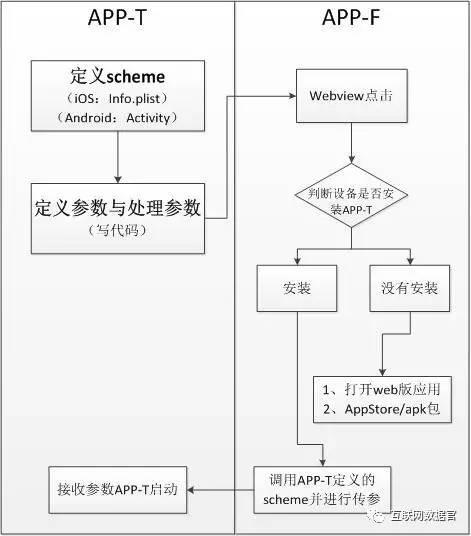
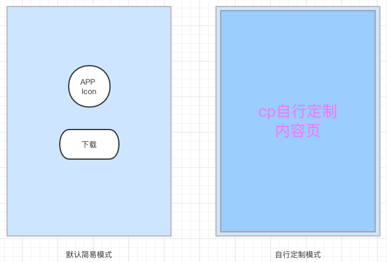
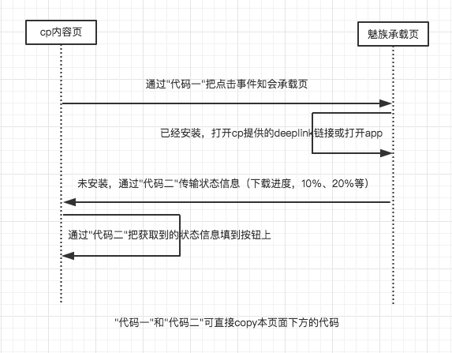
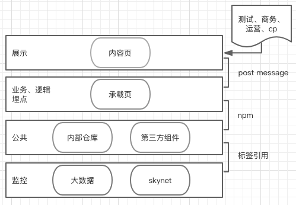
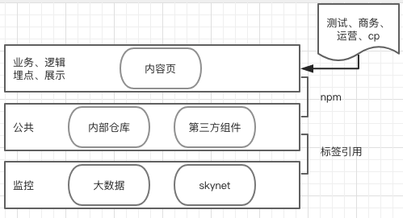
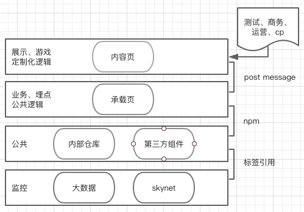

开发的担当：通过优秀的架构，提高各方工作效能！很久很久以前，某第三方厂商希望在我们的某App上面放置其开发的活动页面。
当时不做多想，采用的方式就是为cp提供活动页面所需的客户端接口的文档，然后由cp自行适配和开发。
以往都是需要我们来开发页面的，现在它们自己开发了，真好！
理想很美好，现实很骨感！
由于技术水平、熟悉程度和无法当面沟通等问题，我们花了大量的时间，教他入门，最后甚至帮他修改代码！
耗费了大量人力，堪比自己开发。
这是一种实现在不同的app间进行跳转的技术方案，其流程大致如下：

某天，接到一个简单的需求：点击push，跳转第三方APP活动页面（CPC）;
看似简单，但是细心一想，其实只有已经安装的，能进行成功跳转，而未安装的，需要提供下载安装功能、良好的交互与视觉效果。
基于之前踩过的坑，这次决定采用一种更加灵活和复用性更强的架构，支持两种模式：

实现方式：
以承载页嵌套内容页的方式，承载页负责逻辑，由我们实现，内容页负责展示，由cp实现。两个页面通过PostMessage进行通信

看起来很完美，然而，随之而来的是：
三个故事，说到底，都是坑！
踩完坑，接下来分享填坑的经验！

一个综合性配置平台，涵盖和汇总以上功能

